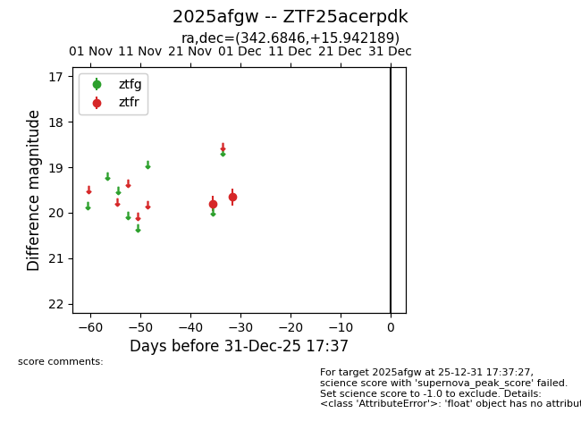
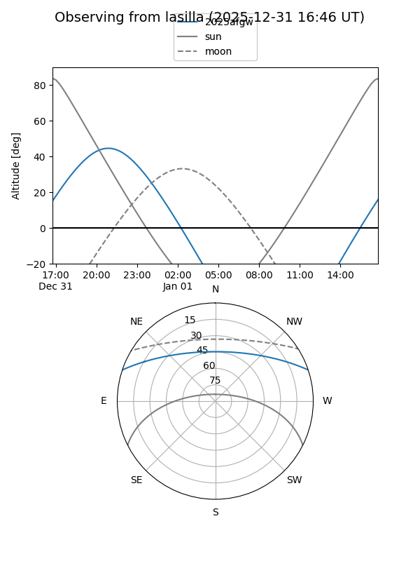
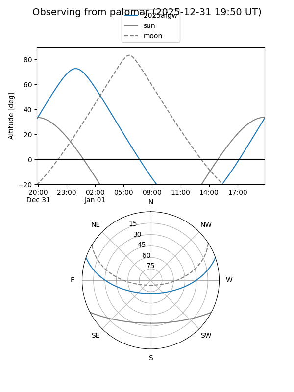

2025afgw
Target 2025afgw at 2025-12-31 16:59
Aliases and brokers:
FINK:
Lasair:
ALeRCE:
TNS:
YSE:
alt names
ZTF25acerpdk (ztf,fink_ztf)
2025afgw (tns,yse)
Coordinates:
equatorial (ra, dec) = 342.6846,+15.94219
equatorial (HMS+DMS) = 22:50:44.31,+15:56:31.88
galactic (l, b) = (85.1501,-37.91962)
Flags:
Photometry:
last ztfr=19.65
2 ztfr detections
Lightcurve

Visibility


Additional plots